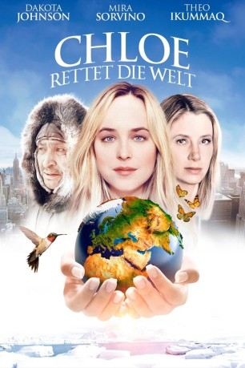

#8997 Chloe rettet die Welt
 
 IMDB-Wertung: 5.9 / 10
IMDB-Wertung: 5.9 / 10  Metascore: 0
Metascore: 0 
Aus den eisigen Weiten des nördlichen Polargebietes macht sich Eskimo Theo (Theo Ikummaq) auf den Weg in unsere moderne Welt. Ihm wurde ein wichtiger Auftrag von seinen Stammesältesten aufgetragen. Er soll eine Botschaft an die Mächtigen der Welt überbringen und sie mit eben dieser prophetischen Nachricht zum Handeln bewegen und ihnen ins Gewissen reden. Die Ausbeutung der Erdressourcen und die Folgen der weiter wachsenden Konsumgesellschaft zerstören den Planeten. In New York angekommen trifft er anstatt auf die Machthaber erst einmal auf die psychisch etwas labile Chloe (Dakota Johnson). Die Obdachlose traut ihren Augen nicht, als sie den ungewöhnlichen Mann vor sich sieht. Ihre Begeisterung über seine Weisheit, seinen Mut und seine Aufgabe kennt keine Grenzen und so beschließt sie, ihm zu helfen. Mit der Star-Anwältin Monica (Mira Sorvino) zusammen gehen sie die Mission zur Rettung der Welt an.
Jahr: 2015
Dauer: 81 Minuten
FSK: 6
Land: Kanada Studio: Tiberius FilmTonspuren: DTS - ,
Untertitel: Deutsch,
Auflösung: 1080p (1920x816) Größe: 2590 MB
Genre: Drama, Komödie
Regisseur: Ezna Sands
Drehbuch: Ezna Sands
Soundtrack: The Newton Brothers
Darsteller:
- Theo Ikummaq als Theo
 Dakota Johnson als Chloe
Dakota Johnson als Chloe- Ashley Springer als Tyler
- André De Shields als Mr. Sweet
 Mira Sorvino als Monica
Mira Sorvino als Monica- Jessica Anderson als Actress
- Christopher Backus als Juju Joe
- Lawrence Ballard als Male Interrogator
- Brandon Boyd als Central Park Singer
- Michelle Campbell als Central Park Girl
- Quincy Chad als Thug 3
- Lori Tan Chinn als Landlady
 Larry King als Larry King
Larry King als Larry King- Chris Erric Maddox als Officer Adams
- Haas Manning als Shai
 Adrian Martinez als Actor
Adrian Martinez als Actor- Elizabeth Masucci als Female Interrogator
 Michael Morana als Arresting NYPD Officer
Michael Morana als Arresting NYPD Officer Tracy Reiner als Homeless Woman
Tracy Reiner als Homeless Woman- Dion Sapp als Thug 2
- Kevin Witt als UN Guard 1
- Nicole Zeoli als Shop Girl
 Martin Pfefferkorn als Homeless Man on Sidewalk (uncredited)
Martin Pfefferkorn als Homeless Man on Sidewalk (uncredited)- Michael Stiles als Narrator
- Peter Henry Arnatsiaq als Theo's Nephew
- DwVaughn Browne als Orderly
- Domenico Gelonese als CEO 2
- Samuel Apak Immaroitok als Inuit Boy
- Tim Intravia als Mime
- Eugene Ipkarnak als Elder 2
- Melissa Jackson als CEO 3
- Ruthie Kaminskas als CEO 4
- Jonathon Mason als Crackhead
- Patrick McCarthy als Husband
- Jean Victor Nkolo als UN Rep / Jean Victor Nkolo
- John Novak als CEO 1
- Eric Oram als Sancho
- Herve Paniaq als Elder 1
- Natalino Piugattuk als Elder 3
- Anthony Quarles als UN Guard 2
- Parker Snow als Actress
Datei: X:\2015(A-F)\Chloe rettet die Welt (2015, FSK6, 1920x816).mkv seit 16.05.2018
Festplatte: HD 2015(A-Z)
 Es gibt insgesamt 143 Filme in der Gruppe '2015(A-F)'
Es gibt insgesamt 143 Filme in der Gruppe '2015(A-F)'